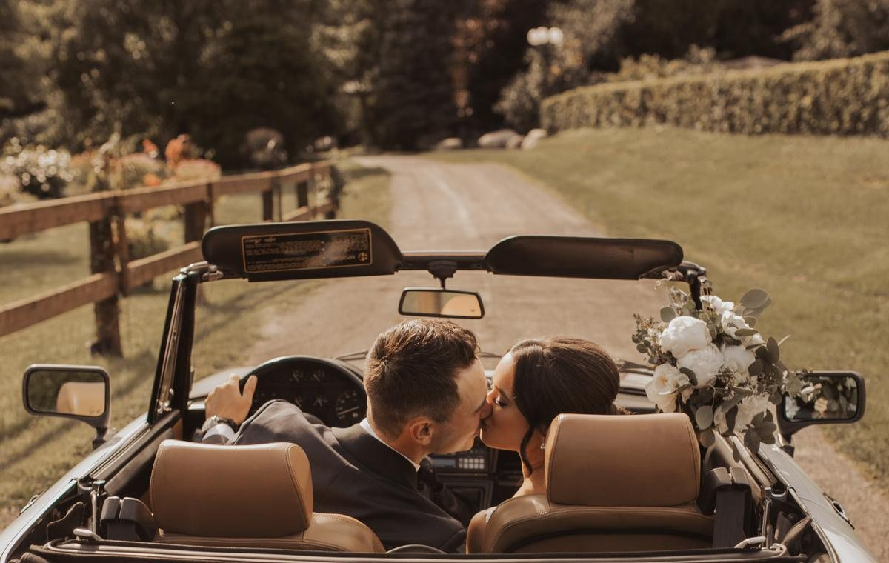

Notre journée portes ouvertes et son souper dégustation, réservé à nos futurs mariés.
Le Salon des Mariés 2027

Samedi 16 janvier 2027, de 10 h à 16 h. Entrée gratuite, et vos proches sont les bienvenus.
Nous avons réuni une vingtaine de fournisseurs avec qui nous aimons travailler : des gens de confiance, qui connaissent nos lieux et savent comment faire pour qu'une journée de mariage se déroule bien. Ils seront installés dans nos salles, prêts à vous rencontrer.
Pourquoi faire le déplacement
Revoir nos espaces, pour mieux imaginer votre décor et le déroulement de la journée
Discuter avec notre Équipe Mariage, sur place pour répondre à vos questions
Rencontrer nos fournisseurs, en une seule journée plutôt qu'en des semaines de rendez-vous
Une fois les kiosques fermés, la salle Phoenix devient votre réception de mariage. Prenez place à une table dressée comme le jour J, goûtez notre menu de mariage et vivez le service tel que vos invités le vivront. C'est aussi le meilleur moment pour arrêter vos choix de plats.
Quand : samedi 16 janvier 2027, dès 16 h
Où : salle Phoenix
Pour qui : les mariés et jusqu'à 2 invités
Tarif : 75 $ par personne, taxes et service en sus
Places limitées : réservez et confirmez vos choix de repas avant le 11 décembre 2026.
Les participants au souper profitent aussi d'un tarif préférentiel pour la nuitée.
Nos prochaines éditions
Votre mariage est en 2028 ou plus tard? Le Salon des Mariés revient chaque année. Pour connaître la date de la prochaine édition et réserver votre place au souper dégustation, informez-vous auprès de votre coordonnatrice mariage (voir « Nous joindre »).